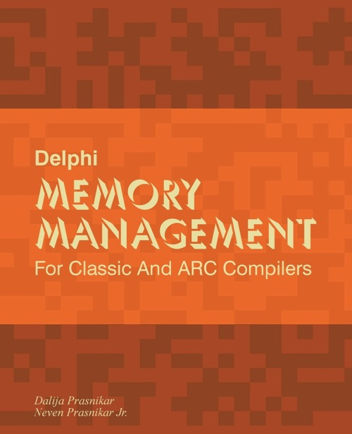

Delphi memory management for classic and ARC compilers
Published by : Amazon
Writed by : Dalija Prasnikar, Neven Jr Prasnikar
Published date : 24/06/2018
ISBN-10 : 1721654909
ISBN-13 : 9781721654901
Language :  English
English
Web site : https://dalija.prasnikar.info/delphimm/index.html
About Delphi memory management for classic and ARC compilers
Memory management. One of the most basic parts of software development, often kept on the side even though it has the most profound effect on how we write our code.
Delphi provides a variety of types with their own memory management logic, as well as two sets of compilers that provide different memory management systems for classes.
* Classic Delphi compiler currently supported on Windows and OSX platforms - using manual memory management while providing ARC for certain types.
* Next generation ARC Delphi compiler supported on mobile Android and iOS platforms, as well as Linux - using full ARC - Automatic Reference Counting memory management system.
Each memory management system has its good and bad sides. Each offers solutions to some problems, but creates a whole range of other problems. And each requires slightly different coding patterns and practices. Knowing the strengths and weaknesses and understanding how memory management system(s) work goes hand-in-hand with writing clean, bug-free and maintainable code.
Both compilers will be covered in detail, as well as coding patterns required for writing cross-compiler code that must run under both.
From manual memory management, to garbage collection, different memory management systems differ not only by the general category they fall in, but also by implementation. And all those fine implementation details also have a great impact on actual code. From the perspective of the everyday software development process discussing memory management is impossible without discussing its specific implementation in specific languages and toolsets.
Where to buy ?
This book has the ISBN13 "9781721654901".
If it is still available for sale, you can order it in your favorite bookstore, by its publisher or online at
Amazon CA,
Amazon FR,
Amazon JP,
Amazon UK or
Amazon USA depending on your country.